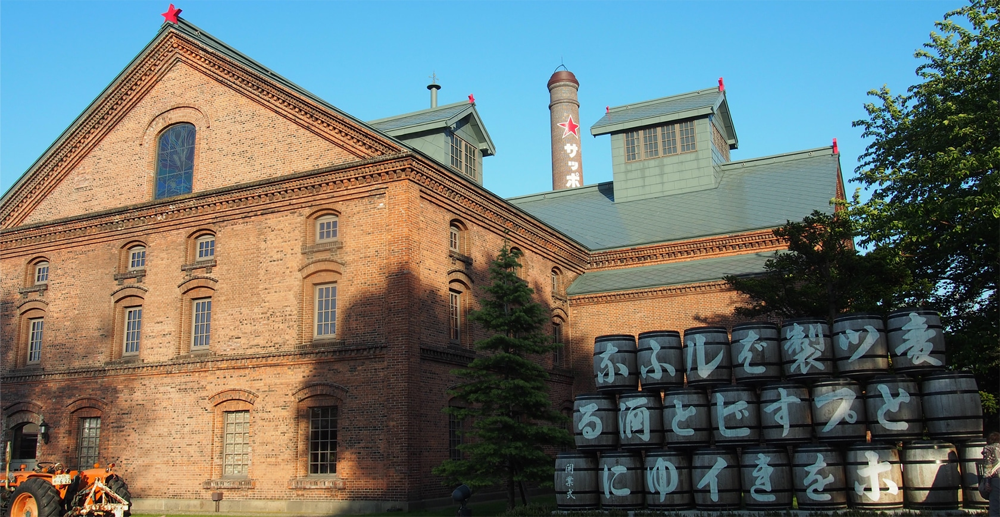
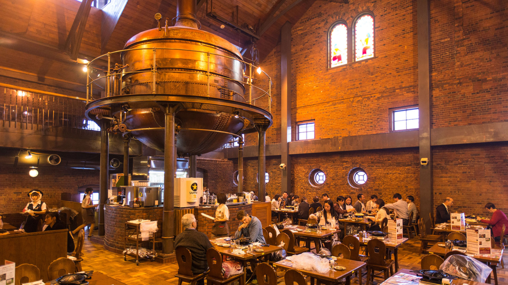

삿포로 : 겨울은 길고 길지만 눈이 있어 견디는 설국(雪国)
삿포로는 일본 최북단에 위치한 정령지정도시이자 홋카이도청, 이시카리 진흥국이 위치한 지역 행정 중심지이다. 메이지 시대 일본의 홋카이도 개척 과정에서 계획도시로 탄생했다. 1972년 삿포로 동계올림픽 개최를 계기로 세계적인 관광도시로 성장했으며, 같은 해인 1972년 일본의 정령지정도시로 지정되었다. 10개의 행정구가 있는 삿포로시는 정령지정도시 중에서도 하마마쓰시, 시즈오카시 다음으로 면적이 넓고, 전체 인구 약 196만 명으로 일본 도시 중 다섯 번째로 인구가 많다. 매년 2월 개최되는 삿포로 눈축제 등으로 세계적으로 잘 알려진 겨울철 관광도시기도 하다.
JR SAPPORO STATION | JR 札幌駅
삿포로, 나아가 홋카이도 여행의 기점이 되는 역입니다. 총 10개의 플랫폼이 있으며 다이마루 백화점, 스텔라 플레이스 등 쇼핑몰, JR 타워 호텔 닛코 삿포로 등의 시설이 역과 바로 연결되어 있고 고속버스, 시내버스를 동시에 이용할 수 있는 버스터미널도 역과 붙어 있습니다. 역 주변에도 다양한 숙박 시설이 모여 있어 삿포로 여행의 기점으로 삼는 곳 입니다. JR 삿포로역에서부터 오도리 공원, 스스키노까지 약 1.2km에 달하는 구간은 지하통로로 이어져 있어 악천후(특히 삿포로의 경우 눈이 많이 올 때)일 때도 이동하기에 불편함이 없습니다. 삿포로에서는 농담처럼 지하통로가 아닌 지상을 통하는 사람들은 관광객 뿐이라는 말이 있습니다.

SAPPORO DOME | 札幌ドーム
삿포로 돔은 일본 홋카이도 삿포로시 도요히라구에 있는 돔구장입니다. 돔의 벽을 개폐할 수 있으며 옥외의 오픈경기장에서 세로 120m, 가로 85m, 무게 8,300t의 천연잔디 축구 스테이지를 공기압으로 띄우면서 이동시킬 수 있는 세계 최초의 축구장 이동방식인 “호버링 시스템”을 도입하였습니다. 시합이나 이벤트가 없은 날은 돔 내부를 견학할 수 있는 “돔 투어”를 개최하기도 하며 그 외에도 전망대와 키즈파크, 트레이닝룸도 영업하고 있습니다.
SAPPORO BEER MUSEUM | サッポロビール博物館
삿포로 맥주 박물관은 삿포로에 위치한 맥주 관련 박물관으로, 삿포로 맥주 회사의 역사와 제조 공정을 소개합니다.
전시물과 모형을 통해 맥주의 제조과정과 유래에 대한 정보를 제공하며, 시음이 가능한 공간도 마련되어 있습니다. 방문객들에게 흥미로운 맥주 문화 체험이 가능한 장소입니다.
 